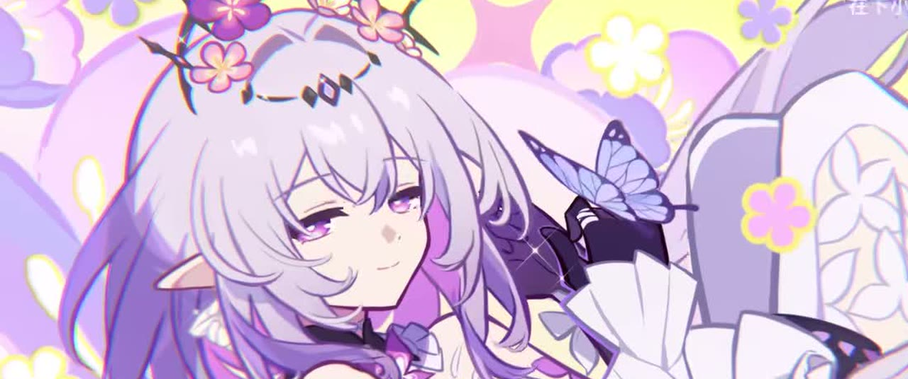
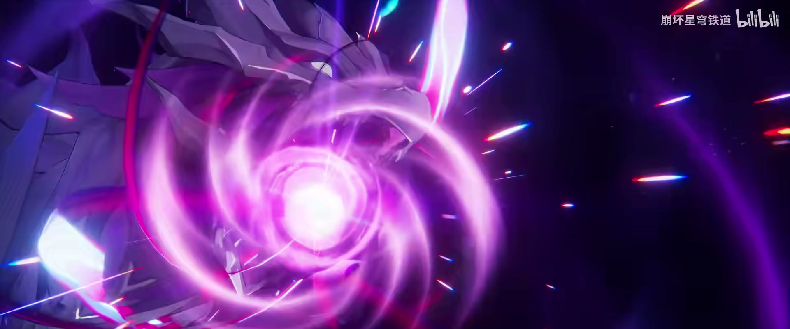
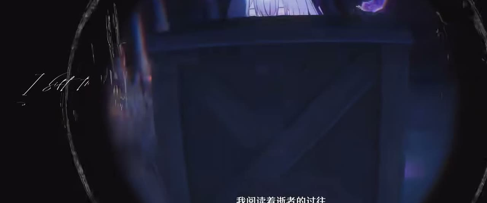
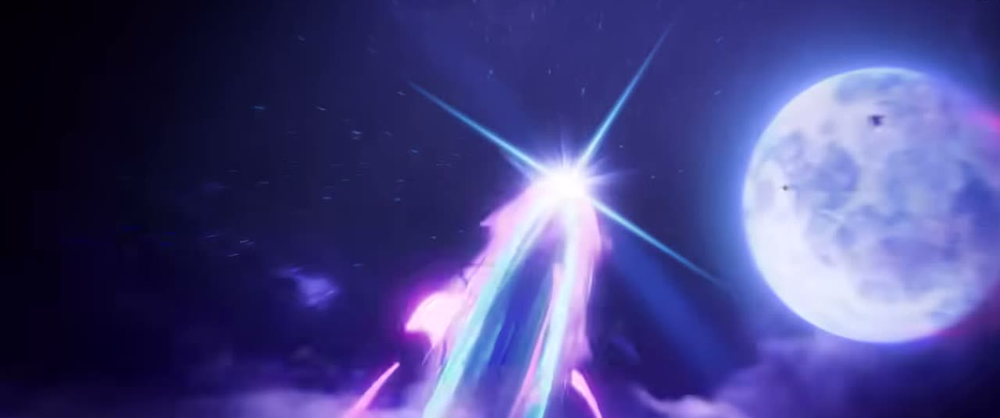
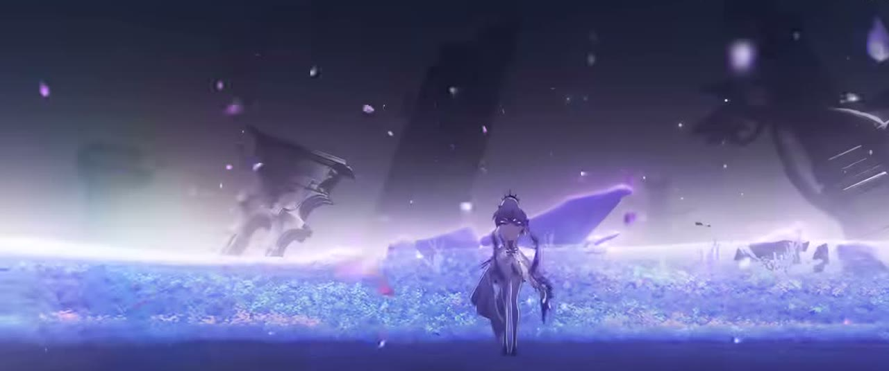
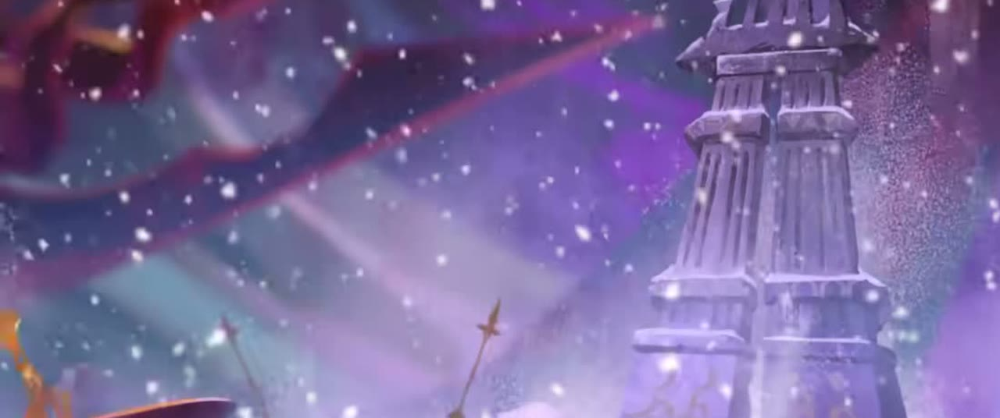
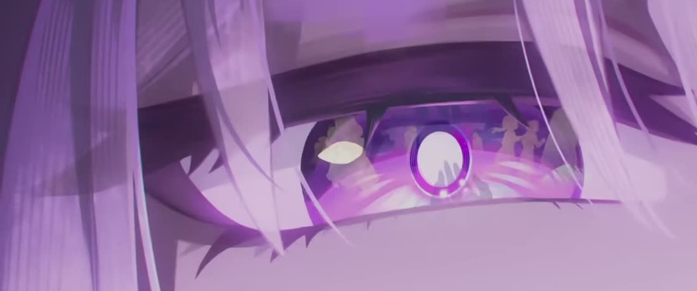
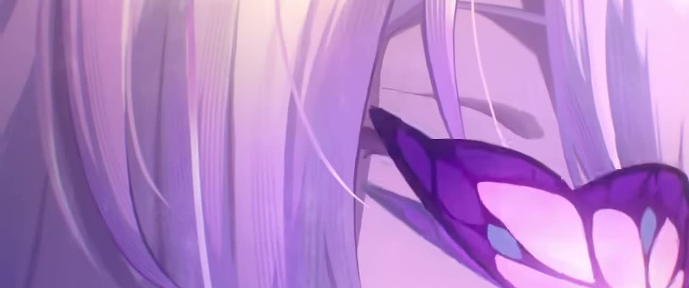
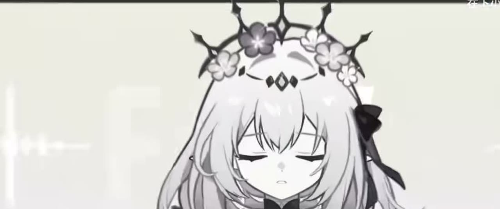
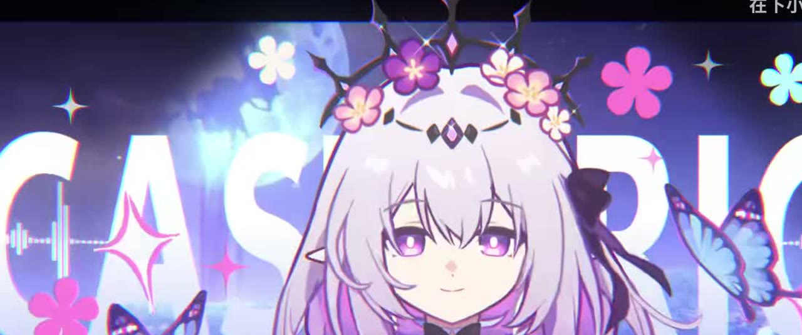

01
BEFORE THE FLOWERS
来处：一场安静的醒来
她从夜色和花瓣之间走来，先学会记住，再学会告别。

展品 / THE GALLERY
一组关于 记忆、死亡与新生 的静态切片。
每一帧都是一只蝴蝶，停在你愿意停留的地方。左右滑动，或点下方缩略图。

雪做的孩子，替终结保管一盏灯。
逍遥 / THE CHARACTER
关于她，几个安静的关键词。
她的名字与蝴蝶、记忆相连。死亡不是终点，而是被记住的一种形状。
她来自哀地里亚，把死亡折成一朵花，留给还在路上的人。
她不是终结本身，而是替终结保管一盏灯的人。
今夜，所有的告别都轻一点——她借来月光，照亮缺席的人。
另一种形态的她，是蝴蝶与幻想交织的奇美拉。
她把今天，寄给明天。
幕落 / EPILOGUE
“ 所有的告别，都会在某个清晨重新开花。”
这是一个致敬《崩坏：星穹铁道》角色「遐蝶」的非官方同人个人展，仅为学习与欣赏而作，无商业用途。
展品画面取自官方角色 PV 截图，仅作展示。若涉及版权异议，可随时替换或移除。
回到序章 ↑角色档案 / CHARACTER ARCHIVE
FILE 04 / THE MEMORY KEEPER
遐蝶并不替死亡发言。她只是替那些已经离开的人，保管一盏仍然亮着的灯。

她阅读逝者的过往，也因此记得每一朵花的名字。

在月亮落下之前，把没有说完的话交给蝴蝶。

她的另一面像花海一样辽阔，温柔，也带着终结的锋芒。
技能残响 / SKILL ECHOES
MOTION STUDY / 03 FRAGMENTS
把动作拆成三次停格：唤醒、穿行、回到她自己的夜。

一朵花先于她睁开眼睛。

所有道路都通向同一片月光。

蝴蝶停在她的肩上，像一枚未寄出的信。
旅程 / THE JOURNEY
BEFORE THE FLOWERS
她从夜色和花瓣之间走来，先学会记住，再学会告别。

THE LONG NIGHT
奇美拉的影子在远处展开，她仍然向着有灯的地方走。

A LETTER TO TOMORROW
旅程没有真正的终点，只有下一次相遇留下的形状。

资料与名言 / ARCHIVE NOTES
“生死皆为旅途，当蝴蝶停落枝头，那凋零的又将新生。”
— 遐蝶角色 PV「墓志铭」展览性质 CAST·MEMORIA 是非官方同人个人展，仅供学习与欣赏，无商业用途。
画面来源 本轮新增画面来自官方发布的角色 PV 与视频素材，经过抽帧及电影比例裁切。
出处索引 角色 PV「墓志铭」 · 碎片史诗 PV · 短片素材